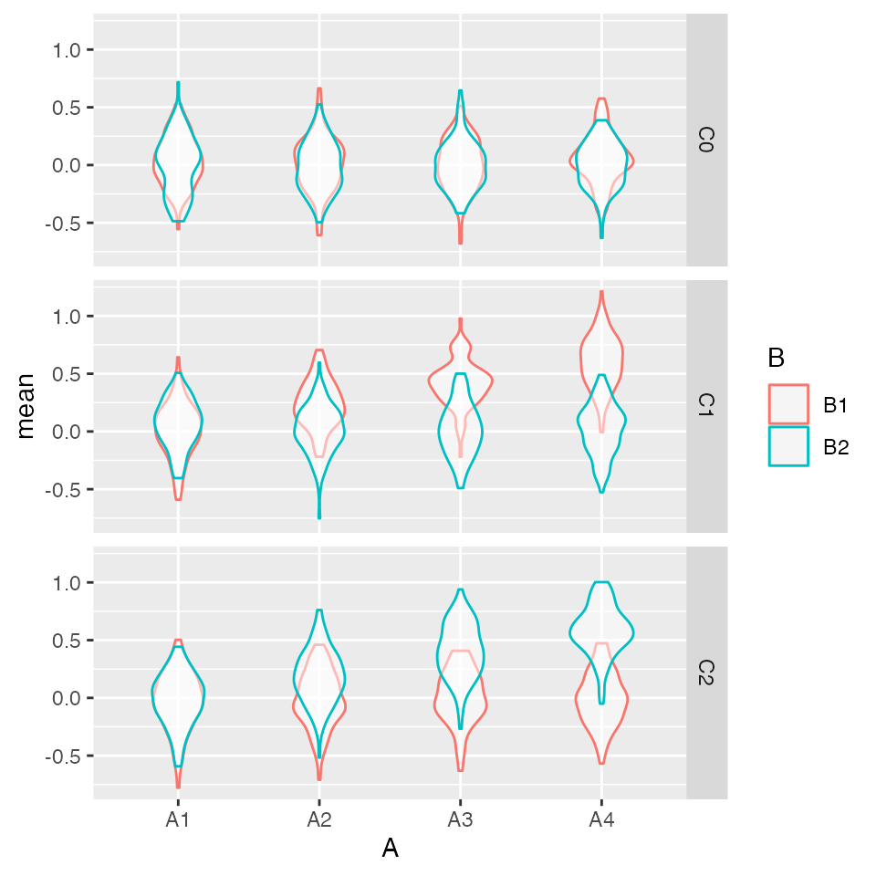

How do you test a specific hypothesis for a complex hypothesis, such as a 4x3x2 mixed-design ANOVA? For example, suppose you have a hypothesis about two within-subject factors (A and B) in three between-subject conditions (control, C1 and C2). You predict that there will be no effects of A or B (and no interaction) in the control condition, an effect of B only on A1 in the first experimental condition, and an effect of B only on A2 in the second experimental condition.
The point of this tutorial is to show just how complex the decision criteria can be for an interaction. I don’t think I’ve chosen ideal criteria, but this is a model for how to start thinking about how you’d specify hypothesis corroboration criteria that are more sophisticated than just “predict a significant 3-way interaction”.
Packages Used
suppressPackageStartupMessages({ library(scienceverse) library(faux) library(afex) library(tidyverse) }) scienceverse_options(verbose = FALSE)
Test Data Simulation
First, simulate some data so you can build your analysis structure. I’ve built in a pretty big interaction, with nothing at all going on in the control condition, and opposite interactions among the within-subject factors in experimental conditions 1 and 2. There are 20 observations (n) in each between cell. Check the
dat <- faux::sim_design( within = list(A = c("A1", "A2", "A3", "A4"), B = c("B1", "B2")), between = list(C = c("C0", "C1", "C2")), n = 20, # A1_B1, A1_B2, A2_B1 ... A4_B2 mu = c(0, 0, 0, 0, 0, 0, 0, 0, # C0 0, 0, .2, 0, .4, 0, .6, 0, # C1 0, 0, 0, .2, 0, .4, 0, .6), # C2 sd = 1, r = 0.5, id = "sub_id", dv = "score", long = TRUE)
Test analysis
I’m using the afex::aov_ez() function to run an ANOVA. This maps on pretty straightforwardly to the way you simulate the data in {faux}.
# run ANOVA omnibus <- afex::aov_ez(id = "sub_id", dv = "score", between = "C", within = c("A", "B"), data = dat, return = "afex_aov")
## Contrasts set to contr.sum for the following variables: C{scienceverse} requires any numbers you use from an analysis to be returned as a named list, and we only care about the 3-way interaction for this study, so we’ll use {broom} and {dplyr} to get just the values we want.
# get stats for 3-way interaction ixn <- anova(omnibus)["C:A:B", ] # calculate group means means <- group_by(dat, A, B, C) %>% summarise(m = mean(score), .groups = "drop") %>% unite("grp", A, B, C) m <- means$m names(m) <- means$grp list( p = ixn$`Pr(>F)`, F = ixn$F, means = m ) %>% str()
## List of 3
## $ p : num 0.351
## $ F : num 1.12
## $ means: Named num [1:24] 0.3397 0.5654 -0.0924 0.1731 0.6192 ...
## ..- attr(*, "names")= chr [1:24] "A1_B1_C0" "A1_B1_C1" "A1_B1_C2" "A1_B2_C0" ...Now you might also want to do some analyses to check that the pattern of any significant 3-way interaction is consistent with your hypothesis.
aov_control <- afex::aov_ez(id = "sub_id", dv = "score", within = c("A", "B"), data = filter(dat, C == "C0"), return = "afex_aov") aov_c1 <- afex::aov_ez(id = "sub_id", dv = "score", within = c("A", "B"), data = filter(dat, C == "C1"), return = "afex_aov") aov_c2 <- afex::aov_ez(id = "sub_id", dv = "score", within = c("A", "B"), data = filter(dat, C == "C2"), return = "afex_aov") list( control = anova(aov_control)["A:B", "Pr(>F)"], cond1 = anova(aov_c1)["A:B", "Pr(>F)"], cond2 = anova(aov_c2)["A:B", "Pr(>F)"] ) %>% str()
## List of 3
## $ control: num 0.878
## $ cond1 : num 0.0836
## $ cond2 : num 0.977Set up Scienceverse study
Set up the study by adding simulated data (use the argument from faux::sim_design() above), the analyses above (make sure to add the library calls at the start of the analysis code or preface each function with the package name).
s <- study("Demo") %>% add_sim_data(data_id = "dat", within = list(A = c("A1", "A2", "A3", "A4"), B = c("B1", "B2")), between = list(C = c("C0", "C1", "C2")), n = 20, # A1_B1, A1_B2, A2_B1 ... A4_B2 mu = c(0, 0, 0, 0, 0, 0, 0, 0, # C0 0, 0, .2, 0, .4, 0, .6, 0, # C1 0, 0, 0, .2, 0, .4, 0, .6), # C2 sd = 1, r = 0.5, id = "sub_id", dv = "score", long = TRUE) %>% add_analysis("ANOVA", code = { library(dplyr) # add for pipes # run ANOVA omnibus <- afex::aov_ez(id = "sub_id", dv = "score", between = "C", within = c("A", "B"), data = dat, return = "afex_aov") # get stats for 3-way interaction ixn <- anova(omnibus)["C:A:B", ] # calculate group means means <- group_by(dat, A, B, C) %>% summarise(m = mean(score), .groups = "drop") %>% tidyr::unite("grp", A, B, C) m <- means$m names(m) <- means$grp list( p = ixn$`Pr(>F)`, F = ixn$F, means = m ) })
Check the analysis works.
study_analyse(s) %>% get_result()
## Contrasts set to contr.sum for the following variables: C## * p: 0.1393093
## * F: 1.6474692
## * means:
## * A1_B1_C0: 0.0649719
## * A1_B1_C1: 0.2215913
## * A1_B1_C2: 0.0500495
## * A1_B2_C0: -0.0063149
## * A1_B2_C1: 0.3299104
## * A1_B2_C2: -0.2422676
## * A2_B1_C0: -0.0694003
## * A2_B1_C1: 0.2746144
## * A2_B1_C2: -0.1725015
## * A2_B2_C0: -0.1733002
## * A2_B2_C1: 0.0783498
## * A2_B2_C2: -0.2186378
## * A3_B1_C0: -0.026929
## * A3_B1_C1: 0.5473249
## * A3_B1_C2: 0.1582065
## * A3_B2_C0: -0.2743202
## * A3_B2_C1: 0.0815687
## * A3_B2_C2: 0.4101281
## * A4_B1_C0: -0.1449238
## * A4_B1_C1: 0.4450946
## * A4_B1_C2: -0.1292933
## * A4_B2_C0: 0.0637482
## * A4_B2_C1: 0.31732
## * A4_B2_C2: 0.6933566Add the extra analyses. They can go in the code of the main analysis and their results can be added to the returned list, or they can be added as separate analysis objects.
s <- s %>% add_analysis("C0", code = { # run ANOVA aov_c <- afex::aov_ez( id = "sub_id", dv = "score", within = c("A", "B"), data = dplyr::filter(dat, C == "C0"), return = "afex_aov") # get stats for 2-way interaction ixn <- anova(aov_c)["A:B", ] list( p = ixn$`Pr(>F)`, F = ixn$F ) }) %>% add_analysis("C1", code = { # run ANOVA aov_c <- afex::aov_ez( id = "sub_id", dv = "score", within = c("A", "B"), data = dplyr::filter(dat, C == "C1"), return = "afex_aov") # get stats for 2-way interaction ixn <- anova(aov_c)["A:B", ] list( p = ixn$`Pr(>F)`, F = ixn$F ) }) %>% add_analysis("C2", code = { # run ANOVA aov_c <- afex::aov_ez( id = "sub_id", dv = "score", within = c("A", "B"), data = dplyr::filter(dat, C == "C2"), return = "afex_aov") # get stats for 2-way interaction ixn <- anova(aov_c)["A:B", ] list( p = ixn$`Pr(>F)`, F = ixn$F ) })
Check the new analyses works.
s <- study_analyse(s)
## Contrasts set to contr.sum for the following variables: Cget_result(s, analysis_id = "C0")
## * p: 0.5718463
## * F: 0.6465138get_result(s, analysis_id = "C1")
## * p: 0.4310396
## * F: 0.9096883get_result(s, analysis_id = "C2")
## * p: 0.0108717
## * F: 4.2554061Add a hypothesis, specify criteria (here, just p < 0.05), and add evaluation criteria. You can add criteria for both “corroboration” and “falsification”, but here we just have corroboration criteria.
(Ignore the statistically dodgy criterion of p > 0.05 for the control condition. In practice, you’d do an equivalence test to show that the control condition has an effect smaller than the SESOI.)
s <- s %>% add_hypothesis("IXN", "There will be a significant 3-way interaction among factors A, B and C") %>% # C:A:B interaction significant add_criterion("sig_ixn", result = "p", operator = "<", comparator = 0.05, analysis_id = "ANOVA") %>% # add criteria to show the pattern is as expected # A1 < A2 < A3 < A4 from B1 in C1 add_criterion("c1_1", result = "mean$A1_B1_C1", operator = "<", comparator = "mean$A2_B1_C1", analysis_id = "ANOVA") %>% add_criterion("c1_2", result = "mean$A2_B1_C1", operator = "<", comparator = "mean$A3_B1_C1", analysis_id = "ANOVA") %>% add_criterion("c1_3", result = "mean$A3_B1_C1", operator = "<", comparator = "mean$A4_B1_C1", analysis_id = "ANOVA") %>% # A1 < A2 < A3 < A4 from B2 in C2 add_criterion("c2_1", result = "mean$A1_B2_C2", operator = "<", comparator = "mean$A2_B2_C2", analysis_id = "ANOVA") %>% add_criterion("c2_2", result = "mean$A2_B2_C2", operator = "<", comparator = "mean$A3_B2_C2", analysis_id = "ANOVA") %>% add_criterion("c2_3", result = "mean$A3_B2_C2", operator = "<", comparator = "mean$A4_B2_C2", analysis_id = "ANOVA") %>% # all criteria must be true to corroborate add_eval(type = "corroboration", evaluation = "sig_ixn & c1_1 & c1_2 & c1_3 & c2_1 & c2_2 & c2_3")
Run power simulation
Running study_power() returns a study object that has rep values stored for the analysis criteria and evaluations. get_power() returns the evaluation criteria for each hypothesis and, optionally, the criteria values.
s <- study_power(s, rep = 100)
## Warning in study_power(s, rep = 100): Hypothesis IXN has no evaluation criteria
## for falsificationpower <- get_power(s, values = TRUE)
str(power$power)
## List of 1
## $ IXN:List of 3
## ..$ corroboration: num 0.46
## ..$ falsification: num 0
## ..$ inconclusive : num 0.54Plot the resulting values.
data.frame( ixn = power$results$ANOVA$p, c0 = power$results$C0$p, c1 = power$results$C1$p, c2 = power$results$C2$p ) %>% gather("analysis", "p", ixn:c2) %>% ggplot(aes(x = p, fill = analysis)) + geom_histogram(binwidth = 0.05, color = "black", boundary = 0, show.legend = FALSE) + facet_grid(~analysis) + xlab("p-values")

t(power$results$ANOVA$means) %>% as.data.frame() %>% pivot_longer( cols = A1_B1_C0:A4_B2_C2, names_to = c("A", "B", "C"), names_sep = "_", values_to = "mean" ) %>% ggplot(aes(x = A, y = mean, colour = B)) + geom_violin(alpha = 0.5, position = position_dodge(width = 0)) + facet_grid(C~.)

t(power$results$ANOVA$means) %>% as.data.frame() %>% mutate(rep = row_number()) %>% pivot_longer( cols = A1_B1_C0:A4_B2_C2, names_to = c("A", "B", "C"), names_sep = "_", values_to = "mean" ) %>% pivot_wider( names_from = B, values_from = `mean` ) %>% mutate(B_diff = B2 - B1) %>% ggplot(aes(x = A, y = B_diff, colour = C)) + geom_violin(alpha = 0, position = position_dodge(width = 0))